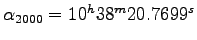
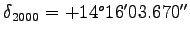
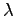
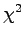
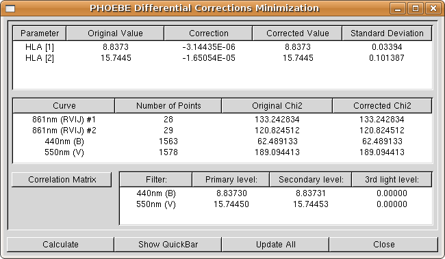

|
This document is a part of the ongoing effort to bring PHOEBE closer to its users. Here you will find step-by-step instructions for using PHOEBE for the first time. When you get acquainted with the main ideas and design, you may find the PHOEBE Reference Manual (which doesn't exist at the time) more instructive.
PHOEBE is released under a GNU General Public Licence. A copy of this licence is distributed along PHOEBE and you may find it in a file COPYING in a base PHOEBE directory. To quote the most important part:
The licenses for most software are designed to take away your freedom to share and change it. By contrast, the GNU General Public License is intended to guarantee your freedom to share and change free software-to make sure the software is free for all its users. This General Public License applies to most of the Free Software Foundation's software and to any other program whose authors commit to using it. (Some other Free Software Foundation software is covered by the GNU Library General Public License instead.) You can apply it to your programs, too.
When we speak of free software, we are referring to freedom, not price. Our General Public Licenses are designed to make sure that you have the freedom to distribute copies of free software (and charge for this service if you wish), that you receive source code or can get it if you want it, that you can change the software or use pieces of it in new free programs; and that you know you can do these things.
To protect your rights, we need to make restrictions that forbid anyone to deny you these rights or to ask you to surrender the rights. These restrictions translate to certain responsibilities for you if you distribute copies of the software, or if you modify it.
For example, if you distribute copies of such a program, whether gratis or for a fee, you must give the recipients all the rights that you have. You must make sure that they, too, receive or can get the source code. And you must show them these terms so they know their rights.
We protect your rights with two steps: (1) copyright the software, and (2) offer you this license which gives you legal permission to copy, distribute and/or modify the software.
Also, for each author's protection and ours, we want to make certain that everyone understands that there is no warranty for this free software. If the software is modified by someone else and passed on, we want its recipients to know that what they have is not the original, so that any problems introduced by others will not reflect on the original authors' reputations.
Finally, any free program is threatened constantly by software patents. We wish to avoid the danger that redistributors of a free program will individually obtain patent licenses, in effect making the program proprietary. To prevent this, we have made it clear that any patent must be licensed for everyone's free use or not licensed at all.
The precise terms and conditions for copying, distribution and modification may be found in a file COPYING.
Although this document is a tutorial and as such doesn't even tend to cover all PHOEBE aspects, a few introductory lines are in order. Let us start by explaining the name: PHOEBE stands for PHysics Of Eclipsing BinariEs.
Probably the most important thing for any new PHOEBE user is to understand the limitations and capabilities of this software. Although PHOEBE aims to be as useful as possible, it still tends to follow the basic principle of simplicity. In other words: although PHOEBE may assist you in solving your specific problem, it won't write an article for you or even make you a good cup of coffee; that is still up to you.
To describe PHOEBE in one sentence: for a set of user-supplied experimental light curves and radial velocity curves PHOEBE estimates physical parameters of an eclipsing binary that theoretically best matches the data.
The basic goal of PHOEBE is to aid you with intuitive interface through the pain of solving this problem. Since the dimension of the parameter phase-space is tremendous and the inverse problem for eclipsing binaries itself highly non-linear, this task is hard to live up to and PHOEBE is thus subject to constant changes and improvements. Hopefully each new version converges to a global optimum.
In this section we will take PHOEBE for a spin to get a feeling about what it can do for us. We shall start with proper configuration, continue with inspecting the overall structure and finally, demonstrate how the data is supplied to the program.
PHOEBE may be installed in two ways: system-wide, meaning all users may use it, or user-oriented,
designated only for an individual user. These two differ only in the
location on the hard disk: the system-wide installation usually resides
in /usr/local/share/phoebe directory and the user-oriented installation in /home/username/phoebe.
We shall presume that your PHOEBE installation was successful; if not, please turn to installation instructions found in the top-level PHOEBE directory. For troubleshooting please refer to the appendices.
As most computer programs, PHOEBE must be set up before the first use. When you first start it, the following warning will appear:
This warning lets you know that PHOEBE was unable to find its configuration directory; this is a hidden directory in your personal HOME directory1 (usually /home/username/.phoebe). By clicking on OK button this directory will be created and PHOEBE will take you to the configuration window (Fig. 2). If you decide not to create this directory, you may click on Cancel button, which will terminate PHOEBE.
Configuration window is composed of two tabs: Files and Options. The first tab contains system-dependent file locations and the other contains options that reflect on the overall PHOEBE performance.
The default settings in the Files tab of the configuration window are appropriate for the system-wide installation; let us analyse the contents of these directories in turn:
Base directory is the directory of your current distribution; it contains generic distribution files such as the README file, ChangeLog file etc. It doesn't contain any execution-specific files.
Source directory is a Base subdirectory and it contains PHOEBE sources (.c files and header files). This directory is optional, the generic make install
script won't install it for you. Sources are needed if you want to
build a binary package for your Linux distribution or if you want to
change the code.
Defaults directory contains a single PHOEBE defaults file. This file, called default.phoebe, governs PHOEBE's startup values: values of parameters with which PHOEBE starts.
Changing this file (either by hand or overwriting it with any other
keyword file) will change the default values permanently.
Working directory is a temporary directory where PHOEBE stores all its I/O files. These files are intermediate WD files, logs, images etc. This directory obviously must have write permissions set, otherwise PHOEBE will issue a warning.
Data directory is where PHOEBE expects to find user data (PHOEBE keyword files and LC/RV data files). For this directory also write permissions must be set.
WD LC and WD DC directories set the location of Wilson-Devinney executables lc and dc. These are core files for PHOEBE and thus must be present.
WD Flux Files directory is meant for future implementation. Since 2003, WD
algorithm changed the model from effective wavelength treatment to
integrated flux treatment, so to each experimental LC/RV curve there
will be a flux file assigned. This directory will contain these flux
files.
Other options include the choice of the plotting package2, limb darkening tables etc. We will talk about them later on, when we discuss their application.
To change a specific directory, you may enter new pathnames
either by typing in the new values directly to the entry box, or by
clicking on the Browse
button and then selecting the right directory through a file selector.
The latter is preferable, since it is easy to make typing errors
otherwise.
The directory you will most probably want to change is the Data directory; it is advisable to create a dedicated directory somewhere in your home directory and supply it to PHOEBE, e.g. /home/username/data.
When finished, click on the Save button. The
settings will be saved, so you need to set it up only this one time. If
you want to review or modify your settings later, you may find them in Settings->Configuration menu. If you click on the OK button instead, the configuration will be kept for that PHOEBE session only. Clicking on Cancel will leave PHOEBE unconfigured. Strange things might happen...
When you are finished setting up, it's time to get some real work done!
The main PHOEBE window is divided in 9 tabs - screen pages with selected content that fits into a specific category (Fig. 3). Data tab contains the information on experimental data, which is supplied by the user. System-related
tab holds all parameters that characterize the binary system as a whole
- such are the epoch parameters, semi-major axis, mass ratio and so on.
Component-related tab, in contrast, contains
curve-independent parameters that are characteristic of each star
individually, such as the effective temperature and gravity potentials.
Orbit tab contains parameters that describe the orbit,
like orbital ellipticity. There is planned support for Roche geometry
graphs. Next tab, Luminosities, contains curve-dependent
parameters: they have different values for different filters. Typical
parameters that fit into this category are flux levelers,
 light and weighting functions.
light and weighting functions. Limb darkening and Surface tabs contain parameters that contribute in perturbative orders of corrections to curves. Finally, the Fitting tab contains functions and parameters that define and support minimization algorithms. Utilities tab holds functions that are not directly connected to PHOEBE and prototypes for functions to be implemented into PHOEBE shortly.
Beside the main window there are three other types of PHOEBE windows. Calculation windows help the user to quickly estimate the values of some specific parameters, such as limb darkening coefficients and gravity potentials. Plotting windows are meant for quick and simple eye inspections of both experimental and synthetic light and radial velocity curves. A Fitting window guides the user through the minimization process and iterative solution convergence. Finally, a Scripter window enables the user to write and execute powerful PHOEBE scripts.
All windows may be open at the same time because of the modular design of PHOEBE. It is up to you to decide the layout that suits you best, PHOEBE poses no limitations in this respect. You may not, however, have more copies of the same window, since the contents of one window might not be the same as the contents of another instance of the same window and this might lead to ambiguity problems.
The very top of the PHOEBE window is occupied by a drop-down menu. Here you will find other actions PHOEBE can perform.
On the bottom of the main PHOEBE window there's a status bar (labelled Last Event), where PHOEBE notifies
you of all events when they are initiated. There is planned support for
history browsing and undoing unwanted changes, which will be closely
related to events in the status bar.
Finally, the lowermost part of the main PHOEBE window is occupied with a button box. The buttons in this box let you quickly perform some specific operations. Open and Save buttons let you manipulate PHOEBE keyword files - files containing all the information about a certain star and are usually identified by the suffix .phoebe. The Defaults button restores all parameter values and entries to a state they were at startup. LC Plot and RV Plot buttons open the plotting windows, Fitting takes you to the fitting window, Help button will eventually bring up the online help screen, but this is not implemented yet. Finally, the Exit button closes all PHOEBE windows and exits the program.
During this tutorial, we shall try and find the preliminary solution of the UV Leonis binary system. UV Leonis is a detached close binary with coordinates
 and
. Data files for this system are acompanying every PHOEBE release and reside in data/UVLeo directory. There are two photometric light curves3 in B and V filters (both from Bessel 1990 series): UVLeo.B and UVLeo.V and two radial velocity curves4: UVLeo.rv1 and UVLeo.rv2 - one for each star.
First and foremost, we have to tell PHOEBE where to find our experimental data.
On top of the Data tab (Fig. 4) you may see a Star Name entry field. This field is for your convenience only and carries no modeling significance. Click on it and enter UV Leonis. Note that the main PHOEBE window title has changed accordingly.
Now we shall face our first physical decision: we must assign a
model to our star by choosing the most appropriate from the given
choices (the Model
field). The choice of a model is very important, since it poses
additional constraints on our solution. Take a minute to browse through
available models, but since our star in fact is a detached system,
leave it on default5.
Next, we will supply PHOEBE with two light curves and two radial velocity curves; enter the number 2 in fields labelled Light Curves and RV Curves.
You may change these values directly, by clicking on the entry and
typing 2 instead of 0, or use the arrows next to the entry. As you
change the number of experimental data curves, empty records are added
to light curves list and to radial velocity curves list. Note that the
used abreviation for light curves is LC and for radial velocity curves is RV.
A major break-through will be accomplished by implementing complete
spectra as experimental input data and this is planned for the
intermediate future.
Assign the first light curve to PHOEBE. Edit the first LC data entry by either double-clicking on it, or by clicking on the Edit Data Entry button on the lower right part of the list while that entry is highlighted. An assignment window (Fig. 5) will appear.
Input files should contain two or three columns. The first column contains the independent variable, which may be either phase or heliocentric Julian date (HJD). The second column contains the dependent variable, which may be in flux or magnitude units. The third column is optional; if present, it contains individual weights given either as weights or as standard deviation. The normalization is arbitrary; higher the number, stronger the weight.
Now inspect your input files from the terminal; simply write something like6:
[andrej@gemma andrej]$ head phoebe/data/UVLeo/UVLeo.B # UV Leo Bessell B # Data from the Crni Vrh Observatory, Slovenia # # Standard star T0845-00073 used to measure nightly sigma. # Weights calculated as 1/sigma^2, renormalized to [0.1, 9.9]. # # HJD Mag w 2451602.395411 10.130 2.53 2451602.397101 10.129 2.53 2451602.398802 10.157 2.53 [andrej@gemma andrej]$Immediately you see that a
# delimeter is used for commenting; whenever PHOEBE reaches
it, the rest of the line is discarded. It is common practice to put a
small header (such as the one you see above) to your input files.
Spaces, tabs and empty lines in input files are allowed.
In our case the independent variable is heliocentric Julian date (HJD, PHOEBE refers to it simply as Time)
and the dependent variable is magnitude. The third column contains
individual weights. These weights are usually based on some sound
time-dependent insight, such as nightly variation of a standard
deviation  of a comparison star. If these
of a comparison star. If these  s are to be trusted, the weights are transformed as
s are to be trusted, the weights are transformed as  . Higher the weight, stronger is the influence of a specific data point on the solution.
. Higher the weight, stronger is the influence of a specific data point on the solution.
Now that we know about the input file structure, set all three column
definitions accordingly. Assign a filename by clicking on the Browse button and selecting UVLeo.B from the data/UVLeo directory.
The dispersion (standard deviation) of our data is changing from night
to night, which we already compensate with individual weighting. Thus a
simple average over all nights is a good initial approximation. Set Sigma to 0.026. We shall correct this approximation when the time comes, during the course of solution seeking.
Finally, choose apropriate filter: click on the filter button and select 440nm (B) from the Bessell subgroup.
If you wish, PHOEBE may compensate automatically for the reddening effect given that the reddening correlation parameter  and the color excess E(B-V) are known. The measured magnitude decreases due to interstellar extinction by a factor
and the color excess E(B-V) are known. The measured magnitude decreases due to interstellar extinction by a factor
 . We consider
. We consider UV Leo's reddening effect to be negligible, so leave the reddening option off.
When you are content with the settings, click the OK
button. This will close the assignment window and update the list of
light curves. Repeat the above assignment for the other light curve
file; this time set the filter to 550nm (V) from the Bessell subgroup and Sigma to 0.016.
All internal calculations in PHOEBE are performed in fluxes, not magnitudes. Therefore PHOEBE automatically
transforms magnitudes to fluxes, if magnitudes are dependent variables,
which in our case they are. The conversion is done by using the
user-supplied zero magnitude (the Zero Magnitude for Flux Normalization
option). If the zero magnitude corresponds to the magnitude at quarter
phase, then the flux will be normalized at quarter phase. This is what
the user should tend to, but not rigorously. By this we mean the
following: don't spend your time seeking the right zero magnitude,
leave this to PHOEBE. Just be sure you are close enough:  2 magnitudes or so. In our case leaving zero magnitude at 10.0 will do just fine.
2 magnitudes or so. In our case leaving zero magnitude at 10.0 will do just fine.
Next, assign radial velocity curves to PHOEBE. In much the same manner as above, inspect the contents of a radial velocity file:
[andrej@gemma andrej]$ head phoebe/data/UVLeo/UVLeo.rv1 # UV Leo Primary Star Radial Velocities # Data from the Asiago Observatory, Italy # # All data reduced with IRAF from acquired Echelle spectra # # HJD RV 2451209.51624 -151.4 2451210.43364 166.6 2451216.49289 116.0 2451217.46653 18.9 [andrej@gemma andrej]$Independent variable for radial velocities is much the same as for light curves: either phase or HJD. The dependent variable is different; it is a measure of radial velocities, which is given either in
km/s or in 100km/s. The latter is a WD legacy, because numerous input files from the past had these units as input. You are thus advised to use km/s if possible, because PHOEBE does all the renormalization internally. Weighting is done in exactly the same manner as for light curves.
From inspecting the radial velocities experimental data, we conclude that the independent variable is Time and that the dependent variable is radial velocity in km/s. This time the weights are missing, so the third column of an input file should be set to Unavailable. Set both Sigmas to 10 km/s (the initial approximation) and choose a filter 861nm (RVIJ) from RV filters
subgroup. Radial velocities should theoretically be independent of the
filter choice and in most cases they are; this specific filter tells PHOEBE to use a straight flux file and not think of radial velocities as wavelength dependent values.
After assigning a second radial velocity curve, note that filter names
in RV columned list have changed: two extra numbering delimeters #1 and #2 have been added to make a distinction in curve dependent assignments.
If you want to use bins instead of complete data arrays, you may select data binning next. This is advisable only when you deal with considerable number of data points (5000 or more), and that only when seeking a preliminary solution. Be aware that you are degrading light curves heavily this way.
If you followed the described procedure correctly, you should end up with a Data tab as shown in Fig. 7.
When we are finished with specifying experimental data for PHOEBE in the Data tab, let's proceed to the System-related tab (Fig. 8).
The System-related tab contains 8 physical parameters
that apply to the binary system as a whole (contrary to
component-related parameters, which apply to each component of the
binary system individually). They are:
HJD0: the reference time epoch of the zero phase. It
is in units of HJD and it determines the initial point (the origin) for
the epoch of the binary.
PERIOD: the period of the binary. It is given in days.
DPDT: the first time derivative of the binary. It
gives the period change rate in days per day, so if different than 0,
it is a very small quantity.
PSHIFT: a constant phase shift of ephemeris time. By applying the shift 0.5, one easily exchanges the roles of both components.
SMA: the semi-major axis of the binary. It is the maximum distance between both binary components given in solar radii, RM: the mass ratio. It is defined as the ratio of a
secondary component mass over primary component mass, primary star
being the one eclipsed at phase 0.
INCL: the inclination of the system. It is measured in degrees: inclinations smaller than VGA: the radial velocity of the binary system center of mass expressed in km/s.
First four parameters, HJD0, PERIOD, DPDT and PSHIFT are called the epoch parameters, since they determine the ephemeris epoch of the binary. With these parameters the mapping to phase-space is readily possible. The following four parameters, SMA, RM, XINCL and VGA determine the global binary shape.
Let us focus for one second at parameter input form (Fig. 9); each parameter is given by its keyword, a concise description and a value.
PHOEBE keyword is the symbol by which a particular parameter is identified in PHOEBE . Keyword names follow a well established WD standard, but since PHOEBE does much more, new keyword names had to be introduced. In appendix D a complete list of all PHOEBE keywords is given. A file containing all parameter values in form KEYWORD = VALUE is called a keyword file. These files usually have the extension .phoebe, but there are no limitations in this respect.
A concise description is meant to elaborate on sometimes cryptic parameter keywords and give additional explanation on some conventions that are not obvious (e.g. the mass ratio being defined as the mass of the secondary star divided by the mass of the primary star - see Fig. 8).
The parameter value depends on parameter type. Usually the value is a number (integer or real), but it may also be boolean (TRUE and FALSE) or a string (text). A typical example of a boolean value is the adjustment switch (Fig. 9), where a string value is, in example, the experimental data filter name.
The Adjust switch is used to mark the parameter for adjustment. If turned on, this switch causes the value of the corresponding parameter to be fitted during the minimization process7. Otherwise the value is kept.
If the value is to be adjusted, the minimization step size tells PHOEBE how crudely to change the values during the minimization process. These values should be carefully chosen, because a value too large will skip the minimum and the value too small will take unnecessarily long computing time.
Finally, on the right-most part there are parameter boundaries for the simplex minimization routine. This routine scans through the parametric hyperspace in search for a global minimum. This is yet to be implemented, so all these boundaries are currently shaded out.
Now try and change the value for period and the origin of time! Change the period to 0.600086 and HJD0 to 2448500.562. These two numbers you should estimate yourself independently of using PHOEBE. Since we have no physical indications about the values of other parameters, leave them be as they are.
Since we know virtually nothing in advance of our star, it makes no solid sense to make any further presumptions. We cannot safely say that the orbit is either circular or elliptical, until we examine the shape of radial velocity curves. We cannot be sure about the temperatures until we examine light curves and measure the color index. We have no idea about the parameters that influence the shape of synthetic curves, such as the inclination, mass ratio or the semi-major axis; we definitely have no clues about the secular changes (time derivatives of the period and the periastron); these are of such perturbative order that it is rarely obvious how to change these values. As the fit brings you closer to the solution, more of the star's nature will be revealed; take it one step at the time.
The next logical step would usually be eye inspection of light curves and radial velocity curves. PHOEBE enables you to plot experimental curves in a separate window, which you access by clicking on the Plot LC button on the button box for light curves and Plot RV button for radial velocity curves.
Let us start with light curves. Click on the Plot LC button on the button-box.
The top left part of the LC plotting window (Fig. 10) is used to select what it is we want plotted. Synthetic light curves are computed from theory, based on the current palette of physical parameters. Experimental light curves are taken from our input files. You may choose which experimental curve to plot by selecting its photometric filter; all PHOEBE operations are in fact identified with their filter names rather than filenames.
The resolution of a synthetic light curve is defined by the number of
vertexes that we use for plotting. This value is held by an entry
labelled Vertexes.
If we have steep and narrow eclipses, we need finer resolution,
especially in eclipse regions. The number of vertexes defaults to 100,
but sometimes this does not suffice for accurate inspections. Try
setting it to 300 for the time being.
The top right part of the LC plotting window is used to assign the variables of our plot. The independent variable is plotted on x-axis and the dependent variable is plotted on y-axis.
Independent variable may be time (HJD) or phase. If the
independent variable for our plot is phase and what we have in our
input files is heliocentric Julian date, then PHOEBE automatically transforms HJD to phase according to the origin of time and period that we set in the main PHOEBE window. This automatic procedure transforms all data points to have phases between  and
and  . Thus, if we use a plotting range wider than this, the regions outside this interval will contain no data points. That is why PHOEBE allows you to map
existing points to the whole region of the plot. This means that a
single data point will occur multiple times, wherever the phase of that
point is the same. This procedure is referred to as aliasing8. Aliasing is turned on through a
. Thus, if we use a plotting range wider than this, the regions outside this interval will contain no data points. That is why PHOEBE allows you to map
existing points to the whole region of the plot. This means that a
single data point will occur multiple times, wherever the phase of that
point is the same. This procedure is referred to as aliasing8. Aliasing is turned on through a Turn on data aliasing switch.
Dependent variable is a bit tricky. It may be:
Magnitude; experimental data is plotted without any
transformation if the input files contain magnitudes and is transformed
with respect to the Zero Magnitude value from the Data tab to fluxes. Synthetic data is transformed internally with respect to wavelength dependent level parameters (HLAs and CLAs).
Total Flux; this is the most significant quantity for PHOEBE.
All calculations are performed with respect to the total flux. By total
flux we mean the sum of the flux from the first star, the flux from the
second star and the (optional) third light. The units of total flux are
arbitrary and are made physically meaningful through level parameters (HLAs and CLAs),
as explained in detail in the next section. Experimental data is copied
verbatim if the input files contain fluxes and is transformed with
respect to the Zero Magnitude value from the Data tab, if they contain magnitudes.
Primary Star Flux; this is the calculated contribution
of the primary star. It has no relevant counterpart in experimental
data since you cannot isolate the mere contribution of the primary
star, so that part of the output is suppressed.
Secondary Star Flux; this is the calculated
contribution of the secondary star. This too has no relevant
counterpart in experimental data and is thus suppressed.
Normalized flux; this quantity is for your convenience only. Some WD
users prefer to adjust the shape of a light curve first and fix the
curve level at the very end. This approach seems a bit vague and is
deprecated in PHOEBE, but it is still available. The
normalized flux is the same as the total flux, except that it is
re-normalized to the value given by the Flux Factor (usually 1) at the phase given by Norm. Phase (usually 0.25).
Let's first see whether our period and the origin of time make sense;
thus we do not want to plot synthetic light curve, so turn the button Synthetic LC off. The data filter is already set to 440nm (B) in the drop-down list. Note that this list contains only filters that correspond to experimental data curves as defined in the Data tab. Now turn the Experimental light curve
switch on. We shall plot the total flux against phase (which is the
default). The phase range lets you select what phases you want plotted.
This too we shall at this time leave at their current values.
To actually plot the diagram, click on the Plot button. The plot in Fig. 11 appears.
You may see that the values for period and the origin of time are pretty much what one would expect, since the minima are at phases 0.0 and 0.5 for all times.
Whenever you click on the Plot button, the plot
is displayed; underneath it you may find the number of experimental
data points, in our case 1563. The values of weighted and unweighted  s (
s (Sigma)
are calculated between experimental data and synthetic light curve, so
they are not calculated now that we don't plot a synthetic lightcurve.
On the right of the plot you may see the Modeling parameters
part of the plotting window; these parameters are calculated from
synthetic light curve parameters, so again they are not displayed for
our first plot.
Now select the other light curve by choosing 550nm (V) filter instead of 440nm (B).
Let us check how big is the difference between the initial
synthetic light curve and experimental data! Turn on synthetic light
curve (Synthetic LC switch) and click on Plot again! You are presented with the picture as it Fig. 12.
Synthetic curve is denoted with a solid red line and experimental data with blue filled circles.
As you may see, the result is disasterous. Standard deviations  are now calculated. If individual weights are included in the computation, we obtain the value of
are now calculated. If individual weights are included in the computation, we obtain the value of
 and if they are not included in the computation, we obtain
and if they are not included in the computation, we obtain
 . It is
. It is  that drives our fit during the minimization scheme, more precisely a convolution of all lightcurve-dependent
that drives our fit during the minimization scheme, more precisely a convolution of all lightcurve-dependent  s.
s.
Synthetic light curve computation now supplies values to the Modeling Parameters window (on the right of the plot itself). Browse through parameters to see what is contained in the output. Abreviations P and S
stand for primary and secondary star, respectively. The masses are
expressed in units of solar mass, mean radii in units of solar radius.
Bolometric magnitude Mbol is in magnitude units and surface gravity potential has standard cgs units g cm/s .
. PSB stands for polar surface brightness, Surface
is in units of the Roche lobe surface size and all radii informations
are given with respect to the semi-major axis. The values you see make
no sense, but this is of course to be expected, since parameter values
are way wrong. Don't worry about it, they will converge eventually.
The fit between experimental points and the synthetic curve is,
for the lack of a better word, terrible. Inspect the other light curve.
To get the feeling of discrepancy, you may use the Plot Residuals switch in the mid-upper part of the window. This switch tells PHOEBE to
calculate the residuals between synthetic and experimental light curve
and to plot them against independent variable. One would hope to get a
pure scatter around 0, but this of course cannot yet be the case.
Just above the plot there are plot control arrows and zooming buttons. These controls enable you to move your plot according to your needs. Try zooming in on the eclipse minimum, move the plot around and, all in all, get a feeling of the plotting window as a whole. A button in between the direction arrows is the reset button; clicking on it will restore original plot settings. On the far right of that part of the plotting window you see the grid options and the coordinate options for your plot. The grid (both coarse and fine) is used to easily read out the values from the plot directly. Some users might prefer axes to a boxed coordinate system and this option is supported too.
When you had your share of playing with the LC plotting window and have examined the results, click on the Done
button to close the window. Note that you may keep the window open if
you prefer - this is usually sound to do when your monitor resolution
is very high (1600 1200 or so).
1200 or so).
We shall now do much the same for radial velocity curves; open the RV plotting window by clicking on the RV Plot button on the button box.
The shape and feel of the RV plotting window is much the same as the LC plotting window, although few differences should be stressed. Dependent plot variables are as follows:
Primary (Secondary) RV in km/s; these two variables tell PHOEBE we want our radial velocities in km/s. This is the most common choice.
Both RVs in km/s; same as above, just that both radial velocity curves are plotted on one plot.
Primary (Secondary) Normalized RV; radial velocity
curves normalized to orbit, meaning they are transformed to a
dimensionless value by multiplying their value in km/s with
Primary (Secondary) eclipse proximity corrections;
this shows the effects of the eclipse proximity correction on radial
velocities in the same dimensionless units as explained above.
Experimental data has no counterpart and its output is thus suppressed.
This time leave both experimental data and synthetic RV switches on;
if you select the first filter (carrying #1 in its name), set Primary Normalized RV as the dependent variable. If you select the other RV curve, set Secondary Normalized RV as the dependent variable. Try plotting both radial velocity curves on on plot.

|
Feel free to examine other options of the plotting window. See what is
accomplished when different choices are made. Move the plot around,
turn the grid on and off, change the coordinate system shape to axes or
boxes. Make your PHOEBE session
as comfortable as possible. Again, if you wish, you may leave your RV
plotting window open or close it by clicking on the Done button.
As you have seen, it doesn't make much sense to plot synthetic solution
over experimental data at first. The fit is of course bad and the only
thing you should really check at this early stage is that ephemerides
for your binary are correct: the period ( ) and the the origin of time (
) and the the origin of time (
 ). If your binary exhibits a period change (typically seen by smearing you cannot fix by changing
). If your binary exhibits a period change (typically seen by smearing you cannot fix by changing  or
or
 ), you should set that parameter value appropriately.
), you should set that parameter value appropriately.
We will now proceed with looking for clues about our binary that would help us set a decent starting point for automatic minimization algorithm.
UV Leonis is a detached binary system and as such we may estimate the gravity potential. PHOEBE uses modified Kopal potentials as defined in (Wilson 1979). Their WD names are PHSV for a primary star and PCSV for a secondary star. In Component-related tab (Fig. 15) you may find the calculation buttons next to initial parameter values. Clicking these brings out the calculation window (Fig. 16).
You may quickly calculate the value of the potential by supplying the instantaneous separation between both stars, normalized to the semi-major axis (thus always 1.0 for circular orbits), the mass ratio and the radius-vector to the desired point in space, again in units of semi-major axis. To calculate the modified Kopal potential, set this radius-vector to the star radius towards the companion star (if tidal forces are strong, the star is deformed into a dumbell shape, so stellar radius is direction-dependent). In case of elliptical orbit the potential will depend on synchronicity parameter and direction cosines, but this is out of scope of this tutorial. Please refer to PHOEBE Reference Manual for further assistance.
On the lowermost part of the calculation window there is a button box. The Calculate button calculates the value of potential. PHOEBE lets
the user inspect it and decide whether the calculated value is
acceptable or not. If not, you may close the calculation window by
clicking on the OK button and there will have been no changes made. If so, clicking on the Update button will copy the calculated value to the main PHOEBE window.
UV Leonis seems to have a pretty circular orbit and in the
first approximation it seems that the default values in the calculation
window are as might be expected (we will be proven wrong shortly, but
this in fact is the realistic presumption). Therefore click on the Calculate button. The value 11.00504 will show up in PHSV entry. Since we are happy with it, click on Update button. The value will be copied to the Advanced tab of the main PHOEBE window. Close the calculation window by clicking on the OK button.
Repeat the same procedure for the secondary potential. The value will be the same.
At this time we cannot safely presume anything about the values of gravity brightening, albedo and synchronicity parameters, so we continue without modifying anything.
There is a preferable order of which parameters should be fitted
when. Patience is advisory; as you gain experience, you will get the
feeling of how to approach to certain types of problems. But the usual
recipe would be this: start with luminosities. These quantities,
although carrying physical name, are actually "normalizers" of your
experimental data; original minimization routines work with fluxes, not
with magnitudes, so PHOEBE internally does all the necessary conversions. These conversions are based on the normalizing magnitude that is set in the Data
tab. It defaults to 10, but should be set to the magnitude of the
quarter phase; as this cannot (and shouldn't) be done too accurately,
luminosities jump in and normalize the data so that the normalization
is actually done internally and you don't have to worry about it. These
luminosities are referred to as HLA and CLA in in WD.
Go to the Luminosities tab (Fig. 17) and turn on the Adjust HLAs switch. Leave the step as it is, since we are going to use Levenberg-Marquardt's  multiplicator routine, which automatically chooses a proper step size when close to the solution.
Now go to the Fitting tab (Fig. 18);
the upper part of the tab is dedicated to the method of multiple
subsets, which we will not use in this tutorial. The lower left part
belongs to the two-dimensional projection of the parameter phase-space,
which helps us analyse parameter correlations. We shall demonstrate its
use in the course of this tutorial. On the right, there are fitting
parameters, which are generally a good choice. Change grid sizes only
if stellar shapes deviate significantly from spheroids, change
Marquardt's
only if convergence isn't satisfactory. Choosing symmetrical
derivatives is a better approximation, but at the expence of computing
time. Since the time isn't that important at the moment, turn on
symmetrical derivatives! After you have gotten yourself comfortable,
click on the Fit Parameters Set For Adjustment switch!
After you have clicked on that button, a fitting window (Fig. 19) will show up. This window is composed of three lists that contain important information for monitoring the progress of your soulution trough iterations.
On the top of the fitting window is a columned list that contains all parameters selected for adjustment. In case of curve-independent parameters there is only one entry and in case of curve-dependent parameters there are as many entries as there are affected curves. Light curves and radial velocity curves differ in this respect and have each their own adjustment switches.
Parameter names are followed by their current values. The fitting algorithm will calculate the correction of one iteration. Be very careful about these values, for they are the best marker to show if the fit converges or diverges. Luminosities essentially always converge, but you can never be too sure. This list also shows the corrected value and standard deviation of the fit of the particular parameter.
Next is a list of all experimantal curves detailing the number of points and the  values before and after calculation for each curve. The values change after each iteration to reflect the similarity of the newly calculated curves to experimental data, and thus are another way to monitor the convergence of your soulution.
Finally, in the lower part of the fitting window there is a
list of passband luminosities for the primary and secondary stars, as
well as for the  body.
body.
Now click on the Calculate button! After some seconds of calculating (depending on the speed of your computer), the window as in Fig. 20 will show up.
You may see that both corrections (and their corrected values) are in
agreement with what we expect (recall what offsets we saw in plotting
windows). Since we are happy with the fit results, we want to keep
them. So click on Update all corrections button to replace the original values in both the fitting window and in the main PHOEBE window with corrected values. The fitting function is now ready for the second iteration, so click on Calculate
button again! The corrections will now be even smaller and the
convergence obvious. Update the corrected values and recalculate the
values as many times as you see fit. As long as you are far away from
the solution, be sure to let the values converge on a decimal or two,
but as the fit gets better and better, try to be as accurate as
possible. If you persisted completely through the convergence, you
should have come up with these values:
|

|
Before you close the fitting window, take notice of the Show QuickBar
button. It opens a window where you can mark any system parameter for
adjustment and change its adjustment step. This is a time-saving
shortcut worth of keeping in mind.
When you've finished (and are happy) with fitting, close the window by clicking on the Close button. Go to the Luminosities tab (or enter the Fitting QuickBar),
turn off the adjustment switch of the luminosities and inspect the
results, as you have before, for both light curves. Notice any
difference? Still not perfect, but much better.
What's next basically depends on your particular problem. In our
case, it seems that the shape of the light curve is way off. The
parameters which influence the light curve shape the most are Kopal
potentials, so let us try and fit those. Go to the System-related tab and mark both primary and secondary star potentials (PHSV, PCSV) to be adjusted. Go to the Fitting
tab and do as before: correct the values of potentials one step at the
time. Note that the convergence is slower than for the luminosities,
but be patient and keep going until you have reached satisfactory
values. A piece of advice: keep a plotting window open and inspect what
each iteration does to your synthetic light curve!
If you have followed the above scheme, you should have landed with the primary and secondary potential values of 4.878 and 4.686, respectively. We now see how way off we have been with our calculated values. You may play with the values in the potential calculation window to see what presumption was wrong. The corrected values produce the following for both light curves:
This is much better already!
... TO BE CONTINUED ...


![\begin{displaymath}
\Phi\, (t) = \mathrm{mod} \left( \frac {1}{\dot P} \log \left[ P_0 + \dot P (t - t_0) \right] \right).
\end{displaymath}](img62.png)
This appendix lists the most important PHOEBE keywords and
their corresponding types. Keywords are symbolic identifiers for
parameters, and are used to describe the model in the keyword file that PHOEBE creates when you save your work.
These are the parameters which determine morphological and conditional constraints of the model.
| PHOEBE keyword | Type | Short description |
NAME |
string | Star common name |
MODEL |
string | Model morphological constraint |
LCNO |
integer | Number of observed light curves |
RVNO |
integer | Number of observed radial-velocity curves |
SPECNO |
integer | Number of spectra |
LD |
string | Adopted limb darkening model |
The following are parameters which determine observational data (light curves and radial velocity curves), and transformation factors.
| PHOEBE keyword | Type | Short description |
MNORM |
real | Quarter phase magnitude |
BINNING |
boolean | Should data be binned |
BINVAL |
integer | Number of bins |
REDDENING |
boolean | Should data be de-reddened |
REDDENING_R |
real | De-reddening factor |
REDDENING_E |
real | De-reddening color excess |
LCFN |
string | LC data filename |
LCCOL1 |
string | LC data independent variable type |
LCCOL2 |
string | LC data dependent variable type |
LCCOL3 |
string | LC data individual weight type |
LCSIG |
string | LC data standard deviation |
LCFLT |
string | LC data passband |
RVFN |
string | RV data filename |
RVCOL1 |
string | RV data independent variable type |
RVCOL2 |
string | RV data dependent variable type |
RVCOL3 |
string | RV data individual weight type |
RVSIG |
string | RV data standard deviation |
RVFLT |
string | RV data passband |
These are physical and geometrical parameters that determine the shape and the structure of the modeled binary.
| PHOEBE keyword | Type | Short description |
HJD0 |
adjustable | Zero epoch time in HJD |
PERIOD |
adjustable | Pperiod value in days |
DPDT |
adjustable | Period time derivative |
PSHIFT |
adjustable | Phase shift |
SMA |
adjustable | Semi-major axis in |
RM |
adjustable | Mass ratio ( |
INCL |
adjustable | System inclination in degrees |
VGA |
adjustable | Systemic radial velocity |
| PHOEBE keyword | Type | Short description |
TAVH |
adjustable | |
TAVC |
adjustable | |
PHSV |
adjustable | Surface potential of primary star |
PCSV |
adjustable | Surface potential of seconary star |
LOGG1 |
adjustable | Surface gravity of primary star |
LOGG2 |
adjustable | Surface gravity of secondary star |
MET1 |
adjustable | Metallicity of primary star |
MET2 |
adjustable | Metallicity of secondary star |
| PHOEBE keyword | Type | Short description |
HLALC |
adjustable | Passband luminosity of primary star |
CLALC |
adjustable | Passband luminosity of secondary star |
EL3 |
adjustable | Third light |
EL3_FLUX |
boolean | Is the |
OPSF |
adjustable | Opacity function |
IPB_ON |
boolean | Include proximity effects? |
NOISE_ON |
boolean | Add synthetic scatter to LCs |
NOISE_TYPE |
string | Synthetic scatter level weighting scheme |
NOISE_VAL |
real | Synthetic scatter |
SEED_VAL |
real | Synthetic scatter RNG seed |
IFAT1_ON |
boolean | Model atmosphere for primary star |
IFAT2_ON |
boolean | Model atmosphere for secondary star |
MODELLGG_ON |
boolean | Use gravity acceleration from the model |
NREF_ON |
boolean | Detailed reflection effect |
NREF_VAL |
integer | Number of reflections |
ICOR1_ON |
boolean | luminosities icor1 switch ??? |
ICOR2_ON |
boolean | luminosities icor1 switch ??? |
| PHOEBE keyword | Type | Short description |
ALB1 |
adjustable | Albedo of primary star |
ALB2 |
adjustable | Albedo of secondary star |
GR1 |
adjustable | Gravity darkening of primary star |
GR2 |
adjustable | Gravity darkening of secondary star |
| PHOEBE keyword | Type | Short description |
E |
adjustable | Orbital eccentricity |
PERR0 |
adjustable | Argument of periastron |
DPERDT |
adjustable | Periastron time derivative |
F1 |
adjustable | Synchronicity of primary star |
F2 |
adjustable | Synchronicity of secondary star |
| PHOEBE keyword | Type | Short description |
XBOL1 |
adjustable | Bolometric LD coefficient |
YBOL1 |
adjustable | Bolometric LD coefficient |
XBOL2 |
adjustable | Bolometric LD coefficient |
YBOL2 |
adjustable | Bolometric LD coefficient |
X1ALC |
adjustable | Passband LD coefficient |
Y1ALC |
adjustable | Passband LD coefficient |
X2ALC |
adjustable | Passband LD coefficient |
Y2ALC |
adjustable | Passband LD coefficient |
| PHOEBE keyword | Type | Short description |
NSPOTSPRIM |
integer | Number of spots on primary star |
NSPOTSSEC |
integer | Number of spots on secondary star |
XLAT1 |
real | Spot latitude on primary star |
XLONG1 |
real | Spot latitude on primary star |
RADSP1 |
real | Spot latitude on primary star |
TEMSP1 |
real | Spot latitude on primary star |
XLAT2 |
real | Spot latitude on secondary star |
XLONG2 |
real | Spot latitude on secondary star |
RADSP2 |
real | Spot latitude on secondary star |
TEMSP2 |
real | Spot latitude on secondary star |